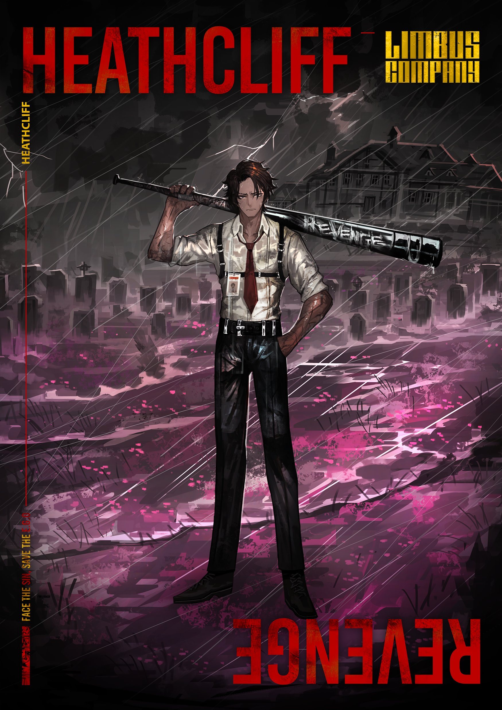
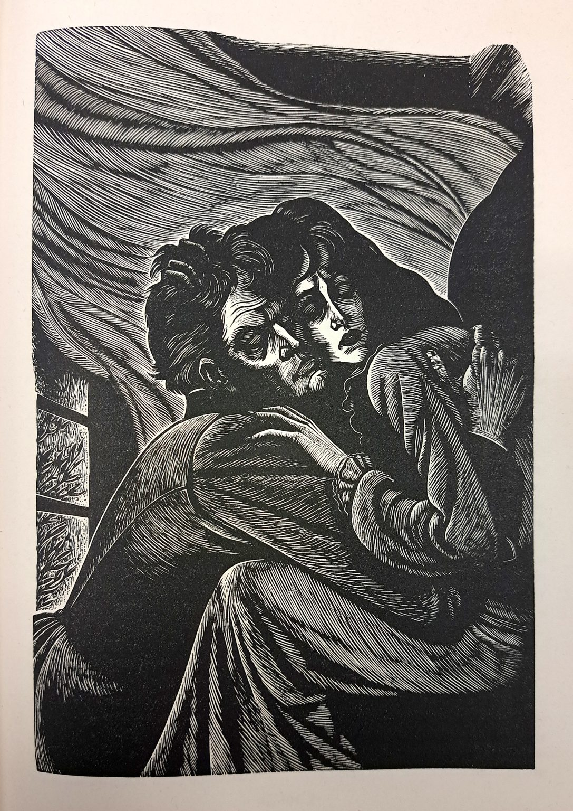
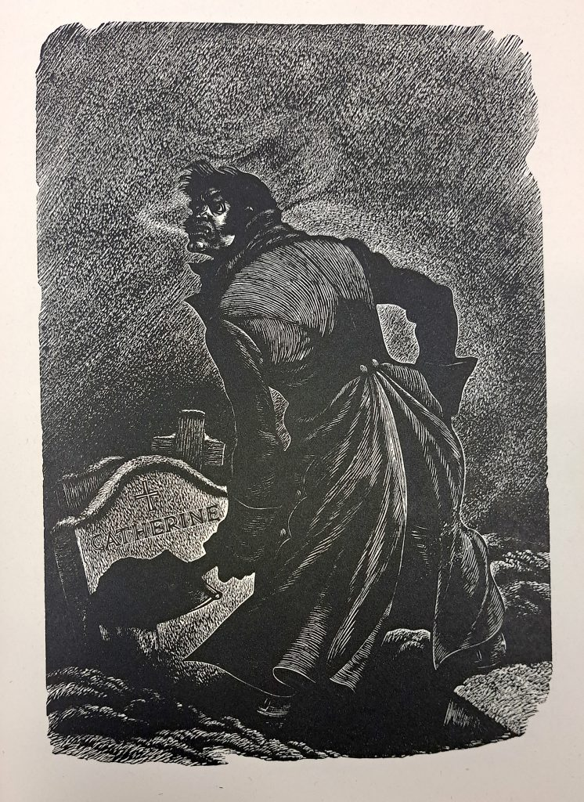
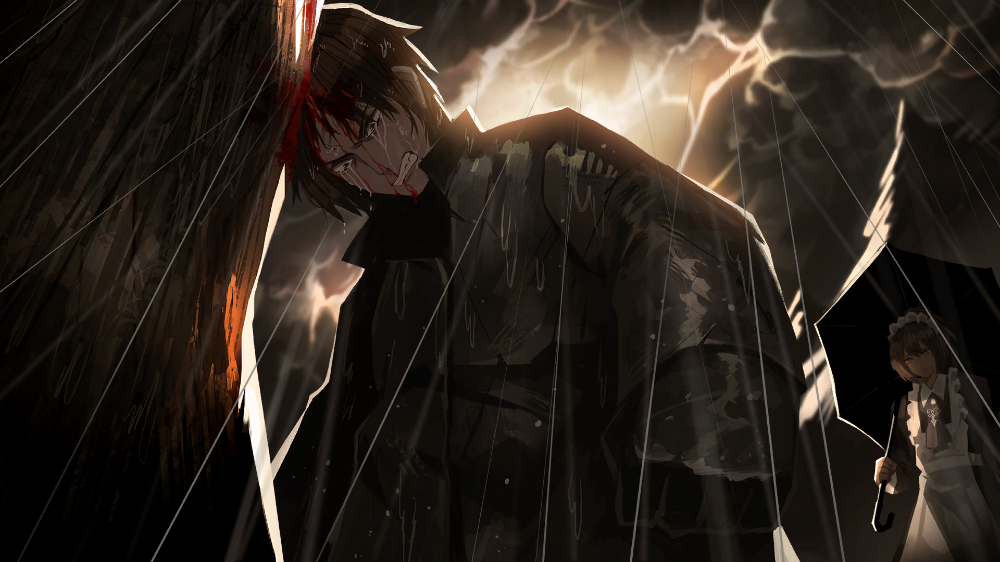
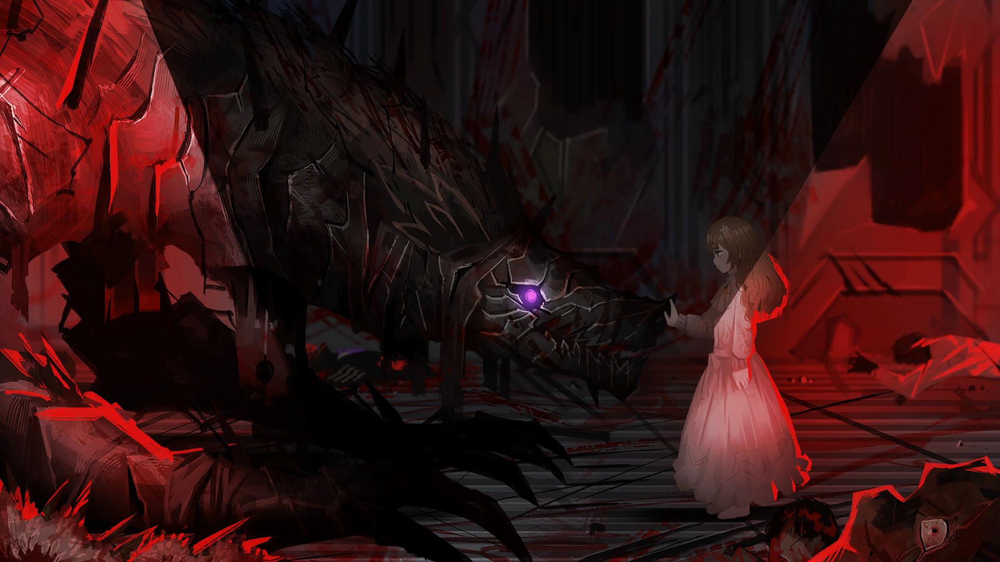
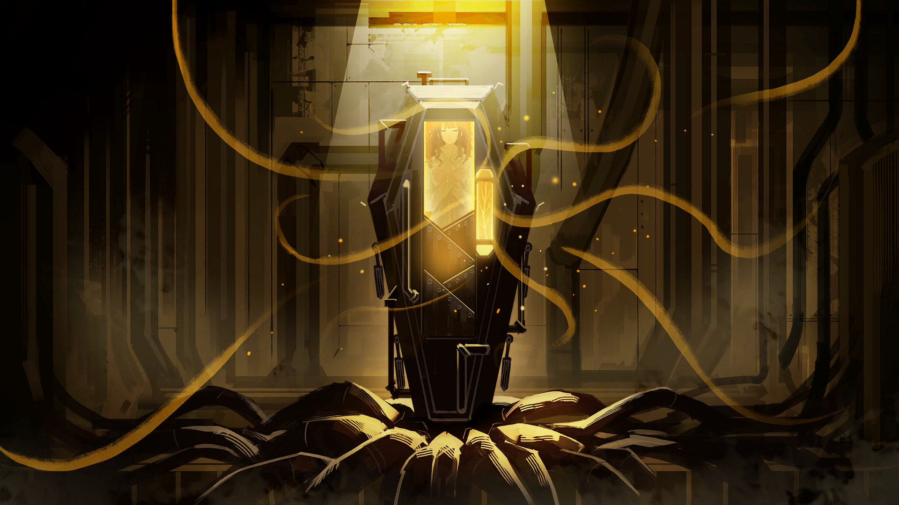
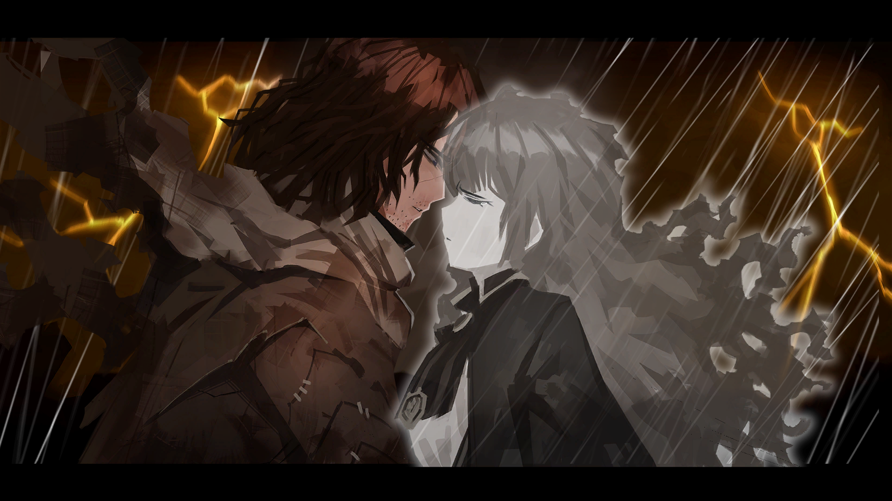

"I have not broken your heart - YOU have; and in breaking it, you have broken mine."
Canto VI: Heathcliff and Wuthering Heights
Introductions
Heathcliff is sinner #7 within the LCB, with an official color of "Furious Violet" (#4e3076). His literary source is Wuthering Heights, which is also the name of the manor that he grew up in. Canto VI, titled "The Heartbreaking", focuses on him.
When Heathcliff was initially introduced to Dante, he proved to have a tempestuous attitude and an equally volatile temper, with a great interest in solving his problems with physical violence. However, as the story progressed, he proved to have a very keen intuition for dangerous situations, and was a lot more level headed when spoken to respectfully; the inclination for violence only manifests when he feels slighted for his intelligence.

Heathcliff's character poster for Limbus Company
Synopsis: Wuthering Heights
Wuthering Heights, written by Emily Brontë in 1847, primarily tells the tale of the previous tenants of the self-titled manor, which were the Earnshaw family, through the narration of Ellen "Nelly" Dean, who used to be a servant of the Earnshaws.
The Earnshaws were initally four large, with Mr and Mrs Earnshaw being the parents of Hindley Earnshaw and Catherine Earnshaw. However, after visiting Liverpool, Mr Earnshaw adopts a young boy who he names Heathcliff, and begins to shower him with his attention at the cost of neglecting Hindley and Catherine. After Mrs Earnshaw dies, this imbalance becomes especially noticable, which only further enrages Hindley, who abuses Heathcliff whenever possible. However, Heathcliff and Catherine become incredibly close.
With time passing, Mr Earnshaw dies, and Hindley becomes the new master of Wuthering Heights alongside his wife Frances. They capitalize on mistreating Heathcliff by making him live as a servant.
Meanwhile, Catherine meets Edgar and Isabella Linton, who are two noble neighbours. Edgar makes a point of provoking Heathcliff due to his lower class.
A few years later, Catherine eventually accepts Edgar's marriage proposal. Tragedy strikes soon though, as Catherine talks to Nelly about how she can't marry Heathcliff despite loving him dearly. However, Heathcliff was only able to overhear a part of the conversation, and left the manor heartbroken and seeking revenge on those who wronged him. This in turn causes Catherine to fall ill.
Three years since Heathcliff leaves, he returns exceptionally wealthy, and he begins enacting his revenge immediately. He elopes with Linton's sister, exploits Hindley's gambling addiction to win the manor for himself, and once Hindley and Frances are dead of alcoholism and childbirth respectively, Heathcliff abuses Hindley's son, Hareton. Notably, Heathcliff tries to visit Catherine, but she dies shortly after giving birth to Cathy, which enrages Heathcliff to the point of insanity. The breakdown causes Heathcliff to mistreat Cathy.

Heathcliff embracing Catherine before she dies. The quote atop this page stems from this scene.
The book finally concludes with Cathy reconciling with Hareton, and collectively confronting Heathcliff about his underhanded methods of taking their properties. While the altercation was physical, Heathcliff avoids the couple, and focuses on the dead Catherine, before being found dead in Catherine's room. The character hearing the story from Nelly, Lockwood, takes a trip to Catherine, Edgar and Heathcliff's graves, and notes that they seem to be at peace now.

Heathcliff digging Catherine's grave, as he is enraged, grieving and mad in the back end of his life
Synopsis of Canto VI
Heathcliff's story in Limbus Company highlights many of the same characters from Wuthering Heights; Heathcliff is adopted by Mr Earnshaw, and grows to love Catherine whilst being abused by Hindley for receiving more attention. Additionally, when Mr Earnshaw dies, Hindley still becomes the owner, and uses that power to abuse Heathcliff. Later on, Edgar Linton still marries Catherine, and the misinterpretation of Catherine's refusal to marry Heathcliff causes Heathcliff to leave the manor, before leaving T Corp in an effort to make something of himself.
Heathcliff would make a return to Wuthering Heights and confront Hindley and Edgar, with his involvement either enabling the ownership of their property or their death. Similarly, he would learn of Catherine's death and loathe himself for that, and this grief would catalyze the next story beat.

Erlking Heathcliff blaming himself for Catherine's death.
However, the canto takes a distinct turn from the source at this stage. For one, Hindley distorts when he begins to blame Heathcliff for the ruin of Wuthering Heights and Catherine's death, which differs from the source having him die from alcoholism. After Hindley is dealt with, the cast is introduced to Erlking Heathcliff. He highlights his goal of killing every Heathcliff in every mirror world, as he believed that they were the source of Catherine's suffering in every world. This revelation causes Heathcliff to distort due to his self hatred and belief that Catherine never loved him.

Catherine comforting the distorted Heathcliff
When Heathcliff is brought back from being distorted, Edgar makes an appearance to discuss his role. He also differs from his literary counterpart as he reveals that Catherine had access to a mirror that allowed her to communicate with other Catherines, and she was eventually convinced that she was responsible for the misery of every Heathcliff. With this, he turns himself into a summoning material for Erlking Heathcliff, who makes a return to continue exacting his revenge.
Other notable events past this point is the reveal of Nelly defecting to the "New League of Nine Littérateurs", which is the main antagonists of the game thus far. The league was the reason that she was able to give the mirror to Catherine, and she generally encouraged Catherine to indulge in her self destructive behavior; Nelly found that she was miserable in every mirror world due to Catherine and Heathcliff's relationship, and strived to not join her peers' fate by taking matters into her own hands.

Catherine in her coffin, with the golden bough embedded in it.
Lastly, every Catherine was summoned to try and erase Catherine's existance from every world. Her appearance coincided with Erlking Heathcliff's showdown with Heathcliff as a final bossfight for the Canto, as the two men fought to prove their conviction. The bossfight ends when Dante utilizes one of the golden boughs to let Catherine and Heathcliff communicate and declare their love for each other, before finally erasing Catherine from every world.
Erlking Heathcliff then disappears, as his purpose does not exist anymore. Notably though, he notes that his conviction blinded him to the possibility of a happy ending between him and Catherine, as one possibility that was found was a world where the two of them reuinited after their deaths.
Thematic Differences
With the context out of the way, some notable differences can be found between the source and the game. For one, the game makes a point of distinguishing between the two versions of Heathcliff, namely being the ones before and after Catherine's death. Given Limbus Company's focus on the usage of mirror technology and its implication on the city, it is a very appropriate adaption to make that suits the setting. Additionally, this change provides an interesting perspective on how Heathcliff's madness leads to a self perpetuating cycle of destruction, as he feeds his own despair and self loathing in every mirror world as Erlking Heathcliff, with Every Catherine then dragging herself even deeper into the pits of despair upon seeing the misery that Erlking Heathcliff is in for her.
Thus, the seperation of Heathcliff's mental state provides a unique perspective on the story, where the Heathcliff that is more mentally stable can stay alive in order to try finding a way to restore Catherine in some capacity, while protecting those he love in the present. Erlking Heathcliff is similarly unique in that he takes similar actions, like harming Isabella Linton, but through turning her into a summoning material for his manifestation , as opposed to eloping with her.

Erlking Heathcliff embracing Catherine one last time
Another important theme of Wuthering Heights is the onus that Heathcliff places on revenge when returning to Wuthering Heights. This is shown in how Erlking Heathcliff makes a point of commencing a "Wild Hunt" in each world he manifests in, where he declares a war on the Earnshaw and Linton family, before eventually killing everyone who is associated with the families.
Heathcliff's name also originates from different sources. In Wuthering Heights, Mr Earnshaw names him after his deceased firstborn son, which further implies a sense of fondness and favoritism that would rub Hindley the wrong way. In Limbus Company, while Catherine does not give Heathcliff his name, she does give him his pet name of "Heath", after her favorite type of flowers. Heaths are described to be
the loneliest flowers that take root and bloom in the wild moorlands...But they're also flowers that survive no matter what devastating tempest comes their way. They endure it all and wait. This highlights how Heathcliff in Limbus Company is especially tenacious when it comes to his determination for Catherine, as he is willing to wait as long as he needs to in order to find a way to bring her back. It bares parallels to the madness that Heathcliff suffers in Wuthering Heights, however that energy is used as a form of positive growth so that Heathcliff can be the best person he can be when he meets Catherine again.
Lastly, it should be noted how major characters from the original book like Linton, Cathy and Hareton are not mentioned in Limbus Company. Given that their involvement in Wuthering Heights is to confront Heathcliff as he descends into madness, it makes sense that the distinction between Heathcliff and Erlking Heathcliff serves the same purpose, where Erlking Heathcliff is defeated in order to provide a "happy" ending for Heathcliff, should that even exist for him.
Conclusions
To conclude, Limbus Company presents the story of Wuthering Heights through a unique perspective, where Heathcliff is allowed the possibility of having a happy ending, while also showcasing what could have happened if the rest of the LCB team was not present to bring him back from his despair. Nelly also takes a more active, antagonistic role in Limbus Company as opposed to being a self declared bystander in Wuthering Heights, and several major characters from the second half of Wuthering Heights are omitted from Limbus Company due to Heathcliff's conflict with Erlking Heathcliff serving the same purpose of ending Erlking Heathcliff's madness.